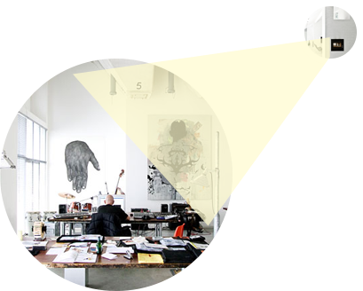
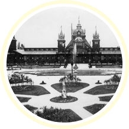

Ми гуртуємо навколо PAWILLION спільноту цікавих та активних людей
Коворкінг стане простором взаємодії, місцем тяжіння
для креативних та інновативних індустрій міста,
середовищем творення нового бізнесу
Чому PAWILLION?
Ми знаходимось в колишньому павільйоні Wystawy Krajowej в
Стрийському Парку,де був павільйон банку і який був
найвідвідуванішим павільйоном виставки. Це будівля на 700 кв м,
яка зараз в закинутому стані і якій ми зараз надаємо друге життя
для проекту коворкінгу
